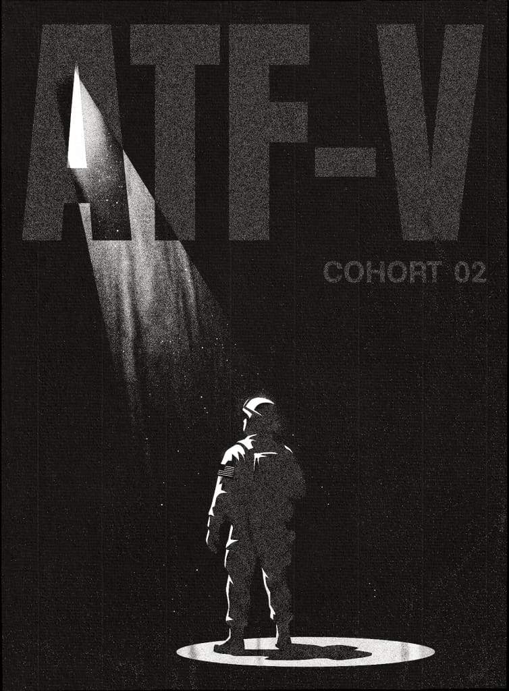

PalVets
捍卫西方PALANTIR® 退伍军人
使命不变，坐标全新。
01 / 概述
Palantir 成立于 9/11 事件之后，旨在帮助保卫美国并加强美国国家安全。
早期岁月
从全球反恐战争初期派遣首批前线部署工程师（FDE）开始，Palantir 人一直与美国战士并肩作战，解决最艰巨、最重要的问题。当硅谷许多公司多年来一直在争论是否支持国家安全任务时，我们的价值观从未动摇——从第一天起，我们的根基就是保护和赋能美国战士。我们坚信，我们国家最先进的技术能力必须用于美国及其盟友的防御与繁荣。
信念
我们相信，那些应当塑造美国 AI 未来的人，正是那些已经证明了自己对美国的忠诚与奉献的人。
使命不变，坐标全新。
鉴于我们对战士的这一承诺，Palantir 是具有技术天赋的退伍军人离开美国军队后的自然过渡之地。在这里，退伍军人知道，他们脱下军装并不是为了在一家沉闷守旧的公司里坐在键盘后面。相反，他们是从一个服务领域转向另一个服务领域。使命不变，坐标全新。
02 / 退伍军人计划
除了 Palantir 内部强大的退伍军人社区外，我们还提供多项独特的、专为退伍军人设计的项目，例如：
美国退伍军人科技奖学金
美国科技奖学金——Mobilize
使命不变。
坐标全新。 ★
03 / ATF – Veterans

ATF-Veterans 是一个为期 12 周的 Foundry + AIP 强化培训项目。
我们招收具有技术潜力的退伍军人，教他们如何使用 Palantir 的工具，比以往更快、更好地解决更多问题。
我们在寻找什么样的人
我们寻找的不仅仅是键盘战士；我们寻找的是各军事职业专业（MOS）中具有技术天赋、能够运用 Palantir 工具解决现实世界问题的人才。
无论某人是在现役、预备役、国民警卫队服役，还是已经光荣退役离开军队，我们都需要他们来锻造美国 AI 的未来。
未来机会
对于具备在 Palantir 取得成功所需的直觉和毅力、但需要在被考虑录用之前通过一段专注学习来提升 Foundry 技能的人来说，这是一个绝佳的机会。成功毕业者将被考虑在 Palantir 任职，或被安排到我们的客户处工作。最重要的是，他们将掌握助力巩固美国 AI 主导地位的技术工具。
ATF-V 每季度启动新一期培训
请留意申请日期 此处.
04 / ATF – Mobilize
ATF—Mobilize 是一个加速培训项目，教授具有技术背景的人员如何快速使用 Palantir 的 Foundry 和 AIP 工具。
ATF—Mobilize 节奏很快，不会手把手教学。它旨在快速动员美国具有技术天赋、持有安全许可的劳动力，让他们立即投入战斗，支持美国工人和战士。
我们在寻找什么样的人
正在从美国军队转型或近期退役、且持有有效安全许可的退伍军人（尤其是键盘战士，但不限于）。
具有国防工业基础（DIB）工作经验、持有有效安全许可的技术型平民。
ATF-Mobilize 定期启动新一期培训
请留意申请日期 此处.
05 / 开放职位
有兴趣探索 Palantir 的其他开放职位吗？请点击 此处 以了解更多信息。